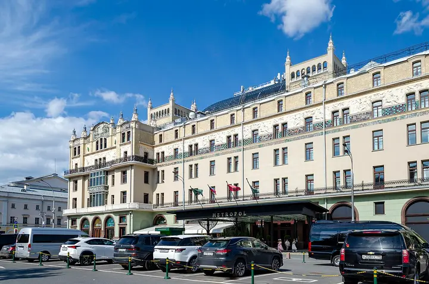

Фото: Никонико962, CC BY-SA 4.0 · Wikimedia Commons
Ресторан в историческом отеле · ЦАО
Метрополь
Парадный зал отеля «Метрополь» под витражным куполом с фонтаном. По воскресеньям с 13 до 17 — знаменитый бранч-буфет, в остальные дни утром завтраки. Для особого повода.
- ₽₽₽ · дороже 3 000 ₽ на человека
- Новое в каталоге
- в 2 планах
Позвать сюда: МетропольОткрыть в каталоге: МетропольМаршрут до места: Метрополь
Адрес и детали
- Адрес
- Театральный пр., 2
Открыть на Яндекс Картах (в новой вкладке) - Метро
- м. Театральная
- Округ
- Центр (ЦАО)
- Цена
- дороже 3 000 ₽ на человека
- Часы работы
- пн–вс 07:00–11:00 · проверили в октябре 2026
- Телефон
- +7 (499) 270-10-61
- Проверено
- работает — проверили в октябре 2026
Планы с этим местом 2
- Большой театр · Театр · м. Охотный ряд
- 4 минуты пешкомМетрополь · Ресторан в историческом отеле
Спектакль на главной сцене страны, а через Театральную площадь — ужин в парадном зале «Метрополя» под витражным куполом с фонтаном.
Открыть план: Большой театр и ужин под куполомПозвать сюда: Большой театр и ужин под куполом
Фото: Юрий Д.К., CC BY 4.0 · Wikimedia Commons
- Красная площадь · Площадь · м. Площадь Революции
- 9 минут пешкомМетрополь · Ресторан в историческом отеле
Прогулка по Красной площади, а с 13 до 17 по воскресеньям — знаменитый бранч-буфет «Метрополя» под витражным куполом с фонтаном.
Открыть план: Воскресный бранч в «Метрополе»Позвать сюда: Воскресный бранч в «Метрополе»
Фото: mos.ru, CC BY 4.0 · Wikimedia Commons


Похожие рядом


Что ещё рядом

Как позвать
- Выбери план, место или событие — в карточке адрес, цены и маршрут в Яндекс Картах.
- Нажми «Позвать сюда» — соберётся приглашение-игра для свидания или голосование для компании.
- Отправь ссылку в любой мессенджер: тебе ответят, а компания отметит, куда и когда может. Бесплатно и без регистрации.